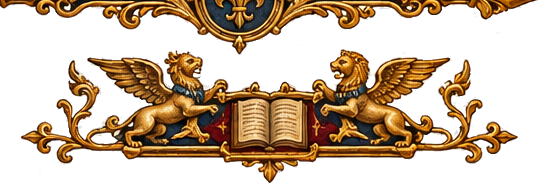

Moderna I
Formas de expressão artística e produção cultural no Renascimento e na Época Moderna.
← Voltar para o Menu Principal

Cultura
Quando os Antigos Voltaram ao Palco: O Teatro no Renascimento
A Revolução da Arte no Renascimento
A Música Como Retrato da Modernidade